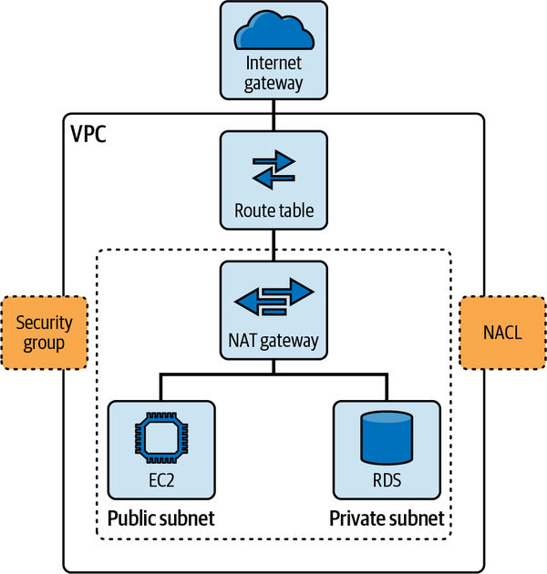
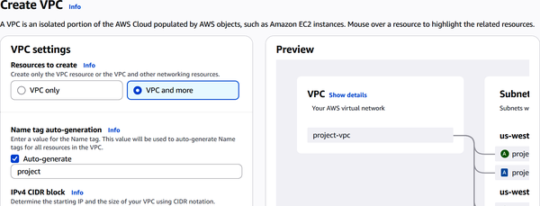

In this chapter, you’ll learn about AWS networking services. You’ll see how virtual private clouds create isolated networks, enabling your resources to stay secure and organized. You’ll also learn what makes Route 53 work, from directing global traffic with resilience to keeping your applications available through routing policies and health checks. And if you need to connect your on-premises environments to AWS, services like Site-to-Site VPN and Direct Connect come into play.
In the AWS Certified Cloud Practitioner exam, the focus is on what each networking service does, its key features, and when to use it.
In a data center, networking systems allow servers, applications, storage and other systems to talk to each other—both internally and across the internet.
At the core of networking are protocols. These are agreed-upon rules that govern how data moves back and forth. Here are some of the most common protocols you’ll see in a data center:
Created in the 1970s, this technology remains a workhorse protocol today. It uses physical cables to connect devices and delivers high-speed data transfers while ensuring the information arrives accurately.
This set of protocols connects systems to the internet as well as private networks, managing the complex interactions required to deliver data packets reliably. While most networks today use Internet Protocol version 4 (IPv4), IPv6 adoption is growing due to its vastly expanded address space. To support both current and future networking needs, AWS enables dual-stack mode—supporting both IPv4 and IPv6—across services like VPCs, EC2, and load balancers, ensuring flexibility and scalability for modern architectures.
Developed by the IEEE (Institute of Electrical and Electronics Engineers), DCB enhances Ethernet performance and reliability. One key feature is priority-based flow control, which helps balance and manage heavy traffic loads in the data center.
Designed for high-speed networking, this protocol can reach speeds up to 256 Gbps. It’s often used to connect servers to shared storage systems that need rapid and consistent data access.
Inside an organization, you’ll find different types of networks serving specific needs. These are examples:
These cover small areas like an office or a single building. Because of their limited reach, LANs usually deliver faster speeds.
WANs span larger areas, connecting multiple cities or even entire countries. In many ways, cloud platforms are advanced WANs. Whether public or private, they provide networking and compute resources on demand.
SD-WANs take a virtual approach, letting you configure and manage the network through software rather than relying only on hardware. This flexibility makes it easier to adapt to changing traffic demands.
At the hardware level, networking relies on switches and routers. Switches manage internal communication within the data center, directing data packets efficiently between servers and storage. Routers, on the other hand, handle communication between the data center and external networks, such as the internet, always aiming to find the best route for data to travel.
To keep everything secure, data centers deploy firewalls. These combine hardware and software to control incoming and outgoing traffic based on pre-established security rules.
As for networking architectures, there are two types:
A server provides resources like storage, processing power, and data, whereas the client (the end user) consumes these services. Each client connects to the server, but they don’t share resources with each other.
Here, all computers in the network have equal privileges. There’s no central server controlling access. Instead, each machine can share resources directly with the others.
Now, let’s look at AWS’s networking services in more detail.
A virtual private cloud (VPC) allows for full control over your network setup. Figure 12-1 shows an example of how this works.

With a VPC, you decide your IP address ranges, create subnets to organize resources into logical groups, and set up routing and security rules that fit your architecture. A subnet is a segmented portion of a VPC’s IP address range that allows you to organize and isolate resources within your virtual network for better security and efficient routing.
For example, suppose you’re running a web application. You might place your public-facing web servers in a subnet that connects to the internet, while your sensitive database servers sit in a private subnet without internet access. That way, customers can browse your website freely, but your database remains tucked away from direct exposure.
When it comes to securing your VPC, AWS gives you multiple layers of defense. At the instance level, you have Security Groups. For example, you might configure one to only allow HTTP and HTTPS traffic into your web server and permit database connections only from the web server’s IP.
Then there are network access control lists (NACLs), which provide an additional layer of security at the subnet level. Unlike Security Groups, which are stateful (if traffic is allowed in, the response is automatically allowed out), NACLs are stateless. You have to define both inbound and outbound rules explicitly.
Another key piece of a VPC is the internet gateway (IGW). This is what connects your VPC to the internet. If your EC2 instance needs to download software updates, it uses the IGW to reach external servers.
But what if you have resources that shouldn’t be accessible from the internet but still need to initiate outbound connections? That’s where a network address translation (NAT) gateway comes in. For example, your database server might need to download security patches without exposing itself to inbound connections from the outside world.
Route tables tie everything together by directing traffic within your VPC. Think of them like a GPS for your network traffic. If a user sends a request to your web server, the route table makes sure the reply goes back out through the IGW or to another subnet, depending on its destination.
Here are some common AWS services you’ll deploy inside your VPC:
EC2 for virtual servers to run applications
Amazon RDS for managed relational databases like MySQL or PostgreSQL
ELB to distribute incoming traffic across multiple servers, which boosts reliability
EFS for scalable shared storage between instances
Finally, your VPC doesn’t operate in isolation. AWS offers services like VPC peering, which enables two VPCs to communicate privately, even across regions. Keep in mind that while this is useful for setups such as separate development, staging, and production environments, data transfer charges apply for cross-region traffic.
For larger or more complex environments, AWS also provides Transit Gateway. This acts as a scalable hub to connect multiple VPCs, on-premises networks, and VPNs. Unlike full-mesh peering, Transit Gateway simplifies network architecture by centralizing routing and control, making it especially valuable for enterprises managing dozens or hundreds of interconnected networks.
Let’s set up a VPC in AWS. Here are the steps:
Log in to AWS.
Enter VPC in the search box.
Select Create VPC. You will see the setup screen shown in Figure 12-2.

Enter a name for the VPC.
For “Resources to create,” select “VPC and more.” This will create the VPC along with subnets, route tables, and gateways.
Enter an IPv4 Classless Inter-Domain Routing (CIDR) block. Use the default 10.0.0.0/16, which gives you plenty of IP addresses.
Leave the IPv6 CIDR block field set to “No IPv6 CIDR block” unless you require IPv6 connectivity.
For Tenancy, keep the default option selected.
Choose the number of Availability Zones. Select 2 to provide high availability across data centers.
For “Number of public subnets,” select 2. These will host resources like web servers that need internet access.
For “Number of private subnets,” select 2. These are for backend resources such as databases that should not be exposed to the internet.
For “NAT gateways ($),” choose “In 1 AZ” to allow private subnets to initiate internet connections securely.
Leave VPC endpoints as None. You can add endpoints like S3 File Gateway later if needed.
Ensure DNS hostnames and DNS resolution are both enabled so your resources can use domain names easily.
In Chapter 8, we talked about Route 53’s global DNS architecture and how it anchors name resolution at the edge. But let’s dig deeper into how this system weaves itself into AWS networking to boost resiliency, performance, security, and hybrid-cloud flexibility.
Amazon Route 53 can act as a traffic director, sending users to where they need to go. That could be an EC2 instance, an S3 bucket, a server in your data center, or a third-party endpoint. If you’re running a hybrid setup with resources split between AWS and on-premises, Route 53 routes traffic to the right place.
One of its most useful features is health checks. Every minute, Route 53 sends out quick probes using HTTP, HTTPS, TCP, or CloudWatch alarms to check that each endpoint is up and running. These results feed straight into CloudWatch, giving you near-real-time visibility. And if a server fails, Route 53 automatically reroutes traffic to a healthy endpoint.
Route 53 gives you various options for routing traffic. You can steer users to the endpoint with the lowest latency, send them based on their geographic location, or split traffic evenly to run A/B tests. You can combine these routing rules however you need. Plus, Domain Name System Security Extensions (DNSSEC) adds an extra layer of security by cryptographically signing your DNS records to protect against tampering.
If you operate in both AWS and your own network, Route 53 Resolver bridges them. It lets your AWS applications resolve internal data center records. It uses inbound and outbound Resolver endpoints along with forwarding rules sent over AWS VPN or AWS Direct Connect. This setup ensures the DNS works smoothly whether your resources live in the cloud or on-premises.
AWS also offers PrivateLink, which lets you securely access AWS services (like S3 or DynamoDB) and third-party SaaS applications directly through VPC endpoints. With PrivateLink, traffic never traverses the public internet, which reduces latency and significantly improves security for sensitive workloads.
Finally, Route 53 keeps detailed logs of every DNS query. You’ll see what was queried, when it happened, where it came from, and which firewall rule or policy applied.
Connecting your office network or data center to AWS might feel daunting at first, but AWS gives you two options to make it straightforward: Site-to-Site VPN and Direct Connect. Both create secure links between your on-premises environment and AWS resources, but they differ in speed, reliability, cost, and setup complexity. Let’s break down what each one brings to the table.
AWS Site-to-Site VPN sets up an encrypted tunnel over the public internet to link your network to a VPC. It’s like driving on a public highway in an armored car. Your data stays protected, but the ride quality depends on internet traffic conditions.
Here are the factors to consider for this option:
You can get a VPN connection up and running within minutes using the AWS Management Console, with no extra physical hardware needed. It’s budget-friendly and comes with two automatically provisioned tunnels for redundancy, so if one drops, traffic switches to the other.
Speeds can reach up to 4 Gbps, but performance varies depending on internet conditions.
VPN connections use industry-standard Internet Protocol Security (IPsec) encryption, keeping data safe as it travels across public networks.
AWS Direct Connect provides a dedicated, private fiber link from your premises directly into AWS, skipping the public internet altogether. These are some of the main factors to consider:
Direct Connect requires physical setup, either in your own facility or through a co-location partner. It usually takes anywhere from 4 to 12 weeks to establish, and upfront costs are higher compared to a VPN.
Because it’s a private line, you get consistent bandwidth ranging from 1 Gbps up to 100 Gbps or more, with stable low latency and no fluctuations from internet congestion.
The connection is private, and you can enhance security further with MACsec encryption (a network security standard that operates at the medium access control layer), though this option is only available at select locations and for speeds of 10 Gbps or higher. For broader compatibility, you can also overlay an IPsec VPN for end-to-end encryption when needed.
It’s common for organizations to choose to use both. They may rely on Direct Connect for its stable, high-performance backbone and add a VPN either as an extra encryption layer over Direct Connect or as a failover path if Direct Connect goes down. This hybrid setup ensures maximum reliability, redundancy, and secure connectivity across your environments.
Table 12-1 shows a summary of the different types of AWS networking services.
| Service | Description and features |
|---|---|
|
Virtual Private Cloud (VPC) |
|
|
Route 53 |
|
|
AWS Site-to-Site VPN |
|
|
AWS Direct Connect |
In this chapter, we learned about the core networking services that AWS offers to build secure, scalable, and reliable cloud architectures. We saw how VPCs provide full control over your network setup with subnets, route tables, security groups, and NAT gateways. We also examined Route 53’s role as a global DNS and traffic routing service with features like health checks and DNSSEC for security and resiliency. Finally, we covered connectivity options, comparing Site-to-Site VPN’s quick, encrypted internet tunnels with Direct Connect’s dedicated private links offering consistent high bandwidth and low latency.
In the next chapter, we’ll take a look at AI services for AWS.
To check your answers, please refer to the “Chapter 12 Answer Key”.
What does a virtual private cloud (VPC) allow you to do in AWS?
Control your virtual network setup, including subnets and route tables
Automatically encrypt all data at rest
Create EC2 instances without security groups
Connect directly to on-premises data centers without any setup
What is a function of a network address translation (NAT) gateway in a VPC?
It provides inbound internet access to private subnets.
It acts as a firewall.
It allows outbound internet connections from private subnets.
It stores database snapshots.
What is the purpose of a subnet in a VPC?
It provides Domain Name System (DNS) services.
It encrypts traffic in transit.
It segments IP ranges to organize resources.
It creates virtual private network (VPN) tunnels.
What is the primary use of AWS Site-to-Site VPN?
Creating an encrypted tunnel between on-premises and AWS
Direct physical fiber connection
Hosting DNS services
Caching web content globally
What is the purpose of an internet gateway in a VPC?
It encrypts traffic in transit.
It creates private subnets.
It allows resources to connect to the internet.
It provides DNS resolution.